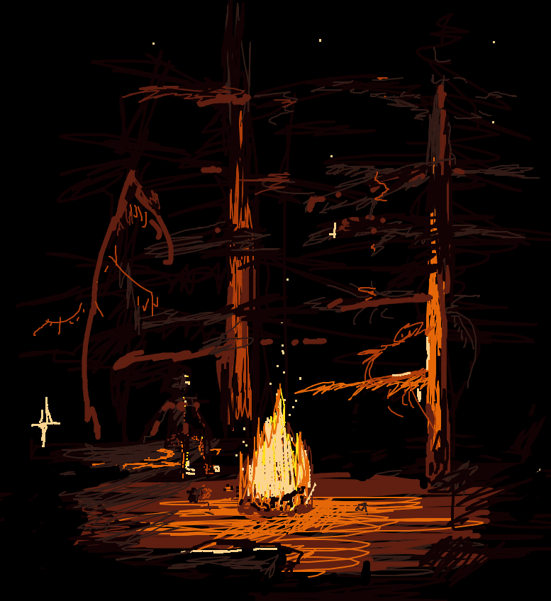

Beatriz Ayon

Here is my code! var img; //var img2; //var img3; var initials ='ba'; // your initials var choice = '1'; // starting choice, so it is not empty var screenbg = 0; // off white background var lastscreenshot=61; // last screenshot never taken function preload() { // preload() runs once, it may make you wait // img = loadImage('cat.png'); // cat.jpg needs to be next to this .js file // you can link to an image on your github account img = loadImage('https://veryprofessional3d.github.io/images/cat3.jpg'); // img2 = loadImage('https://veryprofessional3d.github.io/images/cat2.jpg'); // img3 = loadImage('https://veryprofessional3d.github.io/images/rainbow.gif'); } function setup() { createCanvas(800, 1000); // canvas size background(screenbg); // use our background screen color } function draw() { if (keyIsPressed) { choice = key; // set choice to the key that was pressed clear_print(); // check to see if it is clear screen or save image } if (mouseIsPressed){ newkeyChoice(choice); // if the mouse is pressed call newkeyChoice } } function newkeyChoice(toolChoice) { //toolchoice is the key that was pressed // the key mapping if statements that you can change to do anything you want. // just make sure each key option has the a stroke or fill and then what type of // graphic function if (toolChoice == '1' ) { // first tool BLACK BROWN stroke(19,2,3) strokeWeight(04); line(mouseX, mouseY, pmouseX, pmouseY); } else if (toolChoice == '2') { // second tool DARK BROWN stroke(50,27,22) strokeWeight(02); line(mouseX, mouseY, pmouseX, pmouseY); } else if (toolChoice == '3') { // third tool BRICK WIDE stroke(96,31,17); strokeWeight(07) line(mouseX, mouseY, pmouseX, pmouseY); } else if (toolChoice == '4') { // fourth tool BRICK THIN stroke(96,31,17) strokeWeight(02); line(mouseX, mouseY, pmouseX, pmouseY); } else if (toolChoice == '5') { // fifth tool RED ORANGE stroke(177,62,10) strokeWeight(02); line(mouseX, mouseY, pmouseX, pmouseY); } else if (toolChoice == '6') { // sixth tool ORANGE stroke(229,103,8) strokeWeight(02); line(mouseX, mouseY, pmouseX, pmouseY); } else if (toolChoice == '7') { // seven tool YELLOW stroke(255,223,26) strokeWeight(02); line(mouseX, mouseY, pmouseX, pmouseY); } else if (toolChoice == '8') { // eigth tool WHITE stroke(225) strokeWeight(02); line(mouseX, mouseY, pmouseX, pmouseY); } else if (toolChoice == '9') { // ninth tool L ORANGE SQUARE stroke(252,212,143) strokeWeight(02); line(mouseX, mouseY, pmouseX, pmouseY); stroke(252,212,143) fill(252,212,143); rect(mouseX, mouseY, 1, 1); } else if (toolChoice == '0') { // tenth tool ERASER stroke(screenbg); strokeWeight(10); line(mouseX, mouseY, pmouseX, pmouseY); } } function testbox(r, g, b) { // this is a test function that will show you how you can put your own functions into the sketch x = mouseX; y = mouseY; fill(r, g, b); rect(x-50, y-50, 100, 100); } function clear_print() { // this will do one of two things, x clears the screen by resetting the background // p calls the routine saveme, which saves a copy of the screen if (key == 'x' || key == 'X') { background(screenbg); // set the screen back to the background color } else if (key == 'p' || key == 'P') { saveme(); // call saveme which saves an image of the screen } } function saveme(){ //this will save the name as the intials, date, time and a millis counting number. // it will always be larger in value then the last one. filename=initials+day() + hour() + minute() +second(); if (second()!=lastscreenshot) { // don't take a screenshot if you just took one saveCanvas(filename, 'jpg'); key=""; } lastscreenshot=second(); // set this to the current second so no more than one per second }